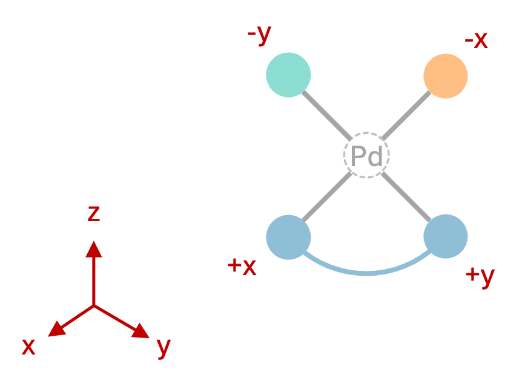

Quickstart Guide
Welcome to the quickstart guide for DART!
As an introductory example, we will walk through the process of assembling 100 square-planar Pd(II) complexes with neutral formal charge. Each complex will feature one cis-bidentate ligand and two monodentate ligands, randomly selected from the MetaLig database. This tutorial assumes that you have already installed DART by following the instructions in the installation guide.
DART is based around the MetaLig database, featuring 41,018 ligands as source for the assembly of novel complexes. In this tutorial, we will first assemble complexes using a random subset of 5,000 ligands, without targeting any particular chemical space. Then, we will learn how to filter down the input ligands in order to generate complexes targeted to your own field of research and to generate those that are more likely to form stable complexes.
Confirm DART Installation
Before starting, ensure DART is correctly installed and configured:
Open your terminal.
Type
DARTassembler --helpand press Enter.
This command should display a help message listing all available DART modules. If you encounter any errors, please refer to the Troubleshooting and FAQs section for assistance.
Make a Working Directory for this Tutorial
Create a new directory for this tutorial and navigate into it:
mkdir DART_quickstart
cd DART_quickstart
Inspect the Ligand Database
To inspect the MetaLig ligand database, use the dbinfo module:
DARTassembler dbinfo --db metalig --n 5000
This will immediately save two files, a concatenated .xyz file to inspect the structures and a .csv file to inspect the properties of the ligands. You can visualize and browse through the structures of the ligands by typing ase gui concat_MetaLigDB_v1.1.0.xyz in your terminal. By opening the MetaLigDB_v1.1.0.csv file with a program like Excel, you can inspect the properties of each ligand such as stoichiometry, denticity, donor atoms, and formal charge.
Assemble Novel Complexes
To use the Assembler Module, we need to provide an input file which outlines all settings for the assembly. Please create a new file called assembler.yml and copy-paste the following settings:
# file: assembler.yml
output_directory: DARTassembler
n_max_ligands: 5000 # Max number of ligands to load from the database
batches:
- name: 'PdII' # User-defined name
metal_centers: 'Pd' # Metal center
total_ligand_charges: -2 # Total charge from all ligands, to define neutral Pd(II) complexes
ligand_db_files: metalig # Path to ligand database file or `metalig` for full MetaLig
ligand_archetypes:
- '2-cis' # Bidentate ligand
- '1-mono' # Monodentate ligand 1
- '1-mono' # Monodentate ligand 2
target_vectors:
- ['+x', '+y'] # Bidentate ligand along +X and +Y axes
- ['-x'] # Monodentate ligand 1 along -X axis
- ['-y'] # Monodentate ligand 2 along -Y axis
n_max_complexes: 100 # Number of complexes to generate
The input file is easy to read: we want to generate neutral Pd(II) complexes, so we set the metal_centers to Pd and the total_ligand_charges to -2. The ligand_archetypes specify the type of ligand to assemble, here one cis-bidentate ligand (2-cis) and two monodentate ligands (1-mono, 1-mono). The target_vectors define the metal-donor orientation for each of the three ligands as shown in Figure 1:
['+x', '+y']: the first ligand (the cis-bidentate) will be coordinated to the metal center along the +X, +Y axes
['-x']: the second ligand (monodentate) will be coordinated along the -X axis
['-y']: the third ligand (monodentate) will be coordinated along the -Y axis
{kind=link}

Figure 1: Square-planar complex geometry defined by the target_vectors above.
For more information and examples see the documentation of the ligand archetypes and target vectors.
Now execute the following command in your terminal:
DARTassembler assembler --input assembler.yml
You can see that the assembler module prints the progress to the terminal and saves the output files in the DARTassembler folder. You can get an overview of the assembled complexes by opening the file isomers.csv with a program such as Excel. This file displays information on all isomers of all complexes DART tried to assemble. DART automatically generates all possible geometric isomers, which is why most of our Pd(II) complexes in the csv file have 2 successful entries. However, you will notice that some complexes have only one or even zero successful isomers, which indicates they were filtered out due to steric clashes or duplicates (e.g. if the chosen cis-bidentate ligand is symmetrical). In total, we see 186 isomers of 100 complexes were successfully assembled, meaning most complexes have two valid isomers generated.
Now, we can also browse through all successfully assembled structures by opening the concatenated .xyz file with the ase gui:
ase gui DARTassembler/batches/PdII/concat_passed_isomers.xyz
Browsing through the assembled structures, you will see that using the entire MetaLig database without any filters results in a very diverse chemical space. In the following section, we will learn how to filter the ligands to generate complexes with more chemically uniform structures.
Feel free now to play with the target vectors and see what happens when you provide other sets of target vectors. Can you swap the cis/trans orientation of the two monodentates relative to the bidentate? For more information on these settings, and especially the target vectors, please refer to the assembler module documentation.
Target Chemical Space
You can achieve a more targeted exploration of TMC chemical space by employing the LigandFilters Module. This module allows you to filter the MetaLig by providing an input file with configurations for each pre-implemented filter. For example, let’s suppose we want to generate Pd(II) complexes with
one Br
one haptic C-donor with exactly 6 haptic donors
one N-N cis-bidentate ligand with at least one carbonyl group and history of coordinating to Pd, Pt or Ni in the CSD
The last option can be very useful to increase the likelihood that our Pd complexes will be chemically viable, since the ligands have precedent coordinating to a metal center from the same group.
We will now use the LigandFilters Module to filter the MetaLig database down to ligands that meet these criteria. Please create one configuration file for each ligand site, named Br.yml, haptic.yml and N-N.yml, and copy-paste the following settings into each file:
# file: Br.yml
outpath: Br.jsonlines
n: 5000
filters:
- filter: 'composition'
elements: 'Br'
instruction: 'must_contain_and_only_contain'
only_donors: False
# file: haptic.yml
outpath: haptic.jsonlines
n: 5000
filters:
- filter: 'property'
name: 'archetype'
values: ['1-mono']
- filter: 'composition'
elements: 'C6'
instruction: 'must_contain_and_only_contain'
only_donors: True
# file: N-N.yml
outpath: N-N.jsonlines
n: 5000
filters:
- filter: 'property'
name: 'archetype'
values: ['2-cis']
- filter: 'composition'
elements: 'N'
instruction: 'must_only_contain_in_any_amount'
only_donors: True
- filter: 'smarts'
smarts: '[C](=[O])'
should_contain: True
- filter: 'parents'
metal_centers: ['Pt', 'Pd', 'Ni']
Now, run the LigandFilters module:
DARTassembler ligandfilters --input Br.yml
DARTassembler ligandfilters --input haptic.yml
DARTassembler ligandfilters --input N-N.yml
You can see that the Br filter of course returns just 1 ligand, the haptic C-donor filter returns 42 ligands and the N-N cis-bidentate filter returns 24 ligands, making 1,008 possible complexes. If we would have used the entire MetaLig database instead of the small test set of 5,000 ligands, the numbers would be much higher: 294 haptic C-donors and 215 N-N cis-bidentate ligands, enabling the generation of 63,210 distinct complexes or 126,420 isomers!
Each filter process creates a new ligand database file (e.g. N-N.jsonlines) containing only the ligands that passed the filter criteria. Additionally, a new directory called info_N-N is created, containing detailed information about the filtering process. You can use this information to verify that the filters worked as intended. For example, let’s check that all the N-N bidentate ligands contain at least one carbonyl group by visualizing all ligands that passed the filter:
ase gui info_N-N/concat_xyz/concat_Passed.xyz
Assembling Complexes with Targeted Chemical Space:
Now, we will redo the assembly process with the refined ligand database. First, we update the assembler.yml file by appending a new batch that uses the filtered ligand databases:
# file: assembler.yml
output_directory: DARTassembler
n_max_ligands: 5000 # Max number of ligands to load from the database
batches:
# First batch remains unchanged:
- name: 'PdII'
metal_centers: 'Pd'
total_ligand_charges: -2
ligand_db_files: metalig
ligand_archetypes:
- '2-cis'
- '1-mono'
- '1-mono'
target_vectors:
- ['+x', '+y']
- ['-x']
- ['-y']
n_max_complexes: 100
# New batch with filtered ligand databases:
- name: 'PdII_targeted' # updated name
ligand_db_files: # updated ligand sources
- 'N-N.jsonlines'
- 'Br.jsonlines'
- 'haptic.jsonlines'
total_ligand_charges: -2
ligand_archetypes: # not necessary anymore, but kept for clarity
- '2-cis'
- '1-mono'
- '1-mono'
target_vectors:
- ['+x', '+y']
- ['-x']
- ['-y']
metal_centers: 'Pd'
n_max_complexes: 100
Note that the ligand_archetypes are not strictly necessary anymore since the filtered ligand databases already contain only ligands of the correct archetype. However, we keep them in the input file for clarity. The total_ligand_charges is still necessary to get Pd(II) complexes because we did not restrict the formal charge of the ligands in the filters.
Now, run the assembler module again:
DARTassembler assembler --input assembler.yml
The assembler will now draw all its ligands from the specified ligand .jsonlines files. Each file will be used to sample the ligands for one binding site, but because one set has only the Br ligand, each complex will always contain that same ligand at that site. Let’s inspect the generated complexes:
ase gui DARTassembler/batches/PdII_targeted/concat_passed_isomers.xyz
You can see that the resulting complexes have a more uniform chemistry, adhering strictly to the defined parameters, while still covering a wide chemical space. This method is excellent for generating a diverse set of complexes with well defined chemical properties for your research.
Understand the Output of the Assembler Module
Now, let’s check the output files generated by the assembler module for the targeted Pd(II) complexes. Let’s navigate to an example directory:
cd DARTassembler/batches/PdII_targeted/complexes/IBEKOWAV
This directory belongs to a complex named IBEKOWAV. DART automatically generates these random names for each complex. The directory contains three files:
- IBEKOWAV1.xyz :
The structure of the first isomer of the complex.
- IBEKOWAV2.xyz :
The structure of the second isomer of the complex.
- IBEKOWAV.json :
A comprehensive file containing detailed information about the complex, including ligand properties, all geometric isomers, and the molecular graph of the complex.
For more information on the output files and their contents, please refer to the assembler output documentation.
Use DART for Your Research
The DARTassembler directory now contains a rich spectrum of complexes with diverse structures, yet all exactly adhering to the chemical space we specified earlier. Of course, the space of ligands we chose in this example was motivated less by chemical considerations and more by wanting to show a wide range of possible filter and assembly options. Yet, the same process enables you to generate novel complexes with exactly defined chemical spaces relevant to your own research.
Want to learn more? Read more in our advanced example on assembling a library of bi-metallic Na-Fe systems with haptic ligands.